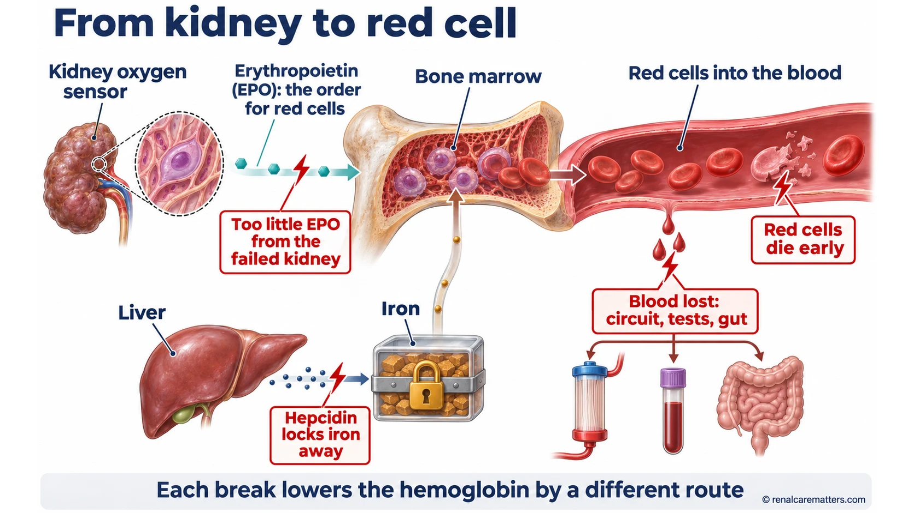
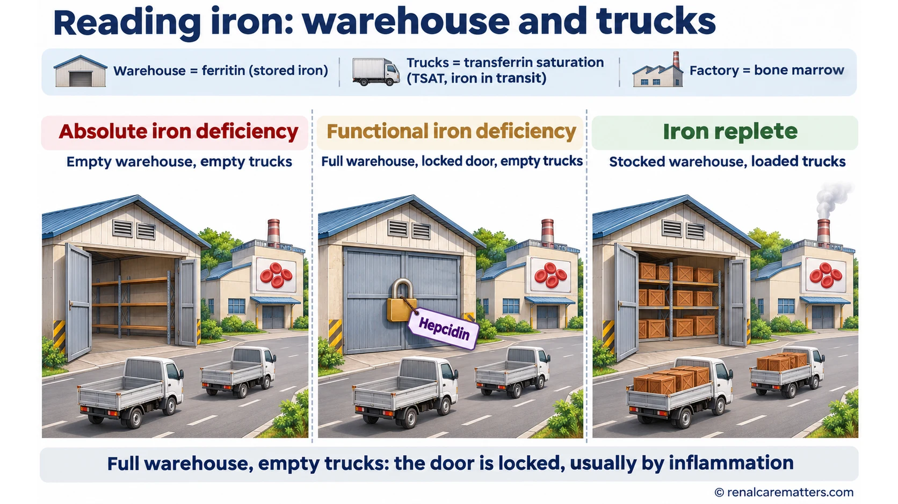
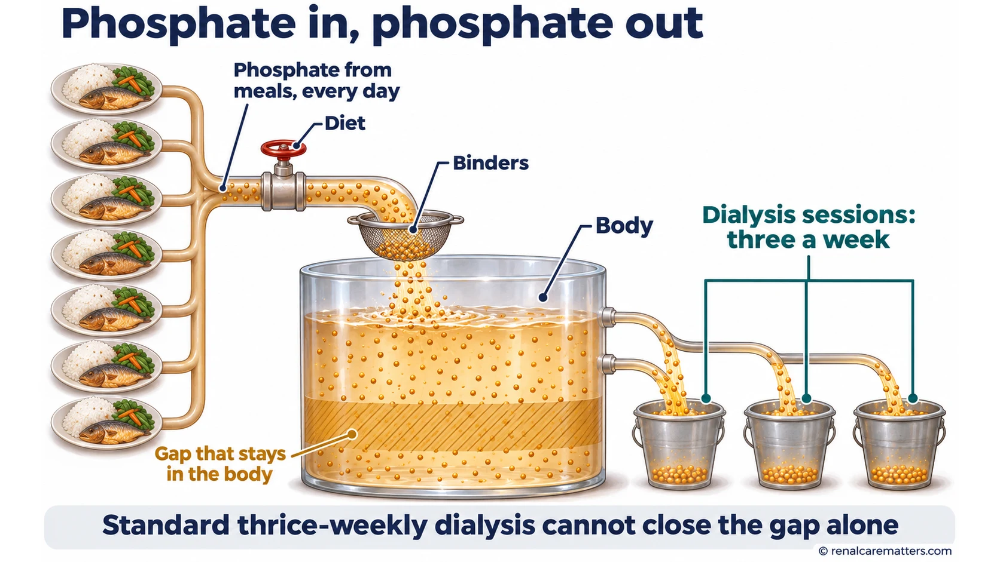
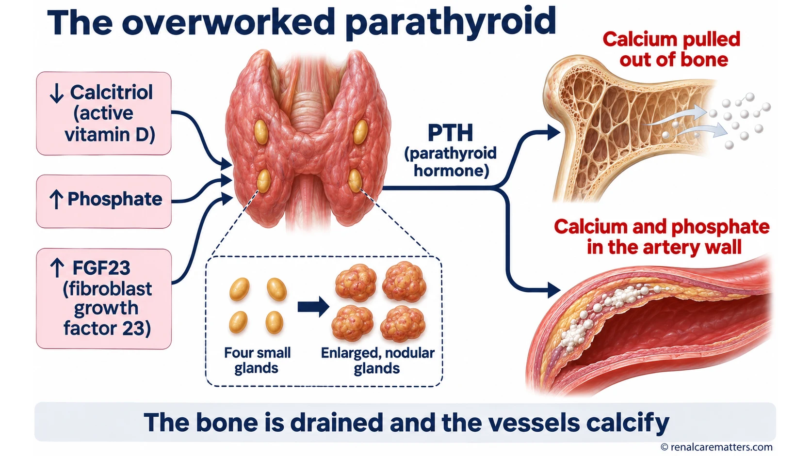
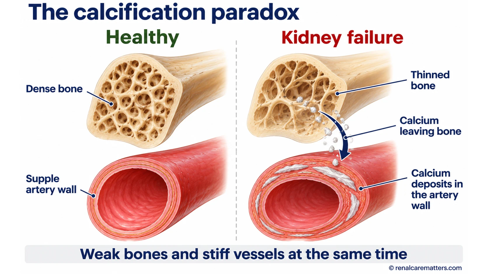
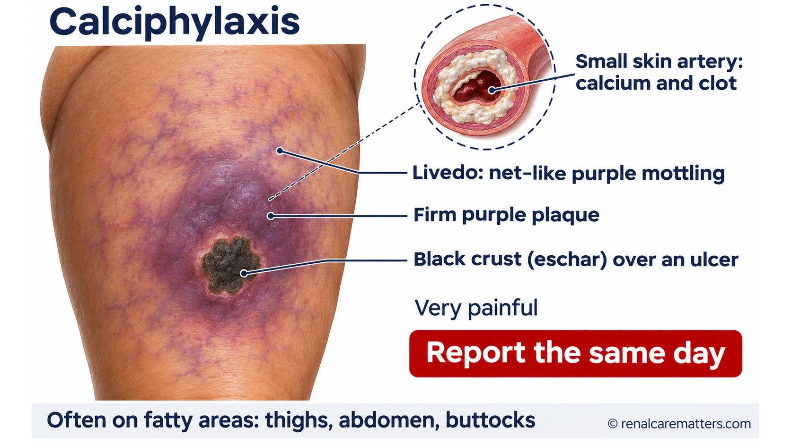

Why hemoglobin is low, how iron and stimulating agents are used, and what calcium, phosphate, and parathyroid hormone results mean.
PublishedNailathalaGipatikPepalwal:ReferencesMga SanggunianMga TinubdanReng Reperensya:19Audience: Physicians who cover hemodialysis shifts · attending nephrologists, medical directors, and head nurses who orient themRead timeOras ng pagbasaOras sa pagbasaOras ning pamamasa:
This module is study material for physicians on duty in hemodialysis units. It explains the reasoning behind common decisions; it is not a protocol. At the chairside, follow your unit’s protocol and ask the attending nephrologist for guidance. Doses and cut-off values are set by your unit. Every case is fictional.
Learning objectives
After this module you should be able to
Explain renal anemia as the sum of low erythropoietin, iron deficiency, iron blocked by inflammation, blood loss, and shortened red cell survival.
Read hemoglobin, ferritin, and transferrin saturation together and tell absolute from functional iron deficiency.
Describe what iron, erythropoiesis-stimulating agents, and the newer oral agents do, what the major trials showed, and why higher hemoglobin targets caused harm.
Recognize a poor response to an erythropoiesis-stimulating agent, list its causes, and know when a transfusion question goes to the attending nephrologist, including why transfusion matters for a future transplant.
Explain the calcium, phosphate, and parathyroid hormone axis, how phosphate is controlled, and read a mineral panel against the 2017 Kidney Disease: Improving Global Outcomes (KDIGO) suggestions.
Recognize severe hyperparathyroidism, abnormal calcium, and calciphylaxis, and know which findings go to the attending nephrologist and how fast.
Pre-testBefore you read, answer the 8 self-assessment questions and note your score. After the module, select New set of questions and compare. The difference is what you learned; the questions you still miss are what to reread.
Start here
The big picture, in plain words
In plain wordsPicture a factory that makes red cells. It needs two things: an order form that tells it how many to make, and raw material to build them with. The bone marrow is the factory, erythropoietin is the order form, and iron is the raw material. In kidney failure the order forms stop coming, and the raw material is locked in the warehouse.
The picture has a limit. The marrow keeps working at a low rate even with little erythropoietin, and the lock on the warehouse is a hormone, hepcidin, that rises and falls with inflammation. The monthly hemoglobin is the net of production, iron supply, red cell survival, and blood loss. Module 4 drew the outline of these systems and of the calcium, phosphate, and vitamin D triangle; this module goes one level deeper.
Figure 1 · Key terms for this module
Erythropoietin (EPO)The kidney hormone that tells the bone marrow to make red cells.
Erythropoiesis-stimulating agent (ESA)An injected medicine that acts like erythropoietin, such as epoetin or darbepoetin.
HIF prolyl hydroxylase inhibitor (HIF-PHI)Hypoxia-inducible factor prolyl hydroxylase inhibitor. An oral medicine that makes the body produce its own erythropoietin by mimicking low oxygen.
FerritinA protein that stores iron. Its blood level reflects iron stores, but it also rises with inflammation.
Transferrin saturation (TSAT)The share of the iron-carrying protein, transferrin, that is loaded with iron. It reflects iron available to the marrow.
HepcidinA liver hormone that blocks iron release from the gut and from storage cells. Inflammation raises it.
Parathyroid hormone (PTH)The hormone of the parathyroid glands. It raises blood calcium by drawing on bone and kidney.
CalciphylaxisCalcification and clotting of small skin vessels that causes very painful skin death.
Most results on the monthly sheet are slow problems for the attending nephrologist’s review. A few need a call today: a sudden hemoglobin fall, symptomatic anemia, a dangerous calcium, possible calciphylaxis, or a fracture. Your work is to read the results as a set, find the urgent few, and report the rest without changing any order.
Opening case · fictional
Case: Hemoglobin falling despite the injections
Mr. Arnel Santiago, 54, is a former tricycle driver. He has dialyzed on Tuesdays, Thursdays, and Saturdays for three years. For now he dialyzes through a right internal jugular tunneled catheter while a new fistula matures. He receives an erythropoiesis-stimulating agent (ESA) with each session on the attending nephrologist’s order, and the dose was raised last month.
It is Saturday, 9:00 a.m., hour one of his session. The monthly laboratory sheet arrives. The values below are illustrative, not targets:
Test
This month
Last month
Hemoglobin
7.9 g/dL
9.4 g/dL
Ferritin
820 µg/L
760 µg/L
Transferrin saturation
14%
19%
C-reactive protein
Elevated
Mildly elevated
Albumin-corrected calcium
8.4 mg/dL
8.6 mg/dL
Phosphate
7.2 mg/dL
6.8 mg/dL
Intact PTH (assay upper limit 65 pg/mL)
1,150 pg/mL
Not tested
When you greet him, he mentions two black stools this week. He feels breathless walking to the toilet. His blood pressure is 118/70 mm Hg and his heart rate is 104 per minute. The nurse, Ms. Rowena Lim, has already rechecked his vital signs. She tells you that his catheter exit site looks red.
Before reading on, decide:
Which finding makes this a same-day call rather than a monthly-review item?
What do the ferritin and transferrin saturation together say about his iron, and which two causes of poor ESA response stand out?
What will you report about the phosphate and PTH, and what will you not act on today?
Keep your answers in mind. The lesson gives you what you need, and the case review near the end shows one sound response.
Lesson · part 1
From kidney to red cell: why the hemoglobin falls
A healthy kidney senses oxygen. When the oxygen delivered to its tissue falls, a transcription factor called hypoxia-inducible factor (HIF) stays active and switches on the erythropoietin gene. Erythropoietin travels to the marrow, red cell production rises, oxygen delivery recovers, and the signal switches off.1,2

Figure 2. From kidney to red cell. The failed kidney sends too few orders, inflammation locks the iron away, blood is lost at every step, and red cells die early. Each break lowers the hemoglobin by a different route.
In kidney failure the loop breaks in several places at once. The KDIGO (Kidney Disease: Improving Global Outcomes) 2026 anemia guideline lists the common causes: relatively low erythropoietin, shortened red cell survival, iron and other nutrient deficiencies, blood loss during hemodialysis, uremic toxins that blunt the marrow’s response, and inflammation.2
What breaks
How it lowers hemoglobin
What you may see on the sheet or at the chair
Erythropoietin production
Scarred kidneys release too little hormone for the degree of anemia
A slow, steady anemia with low reticulocytes
Iron supply
Iron is lost with blood, and absorption from the gut is blocked
Low transferrin saturation, low or falling ferritin
Iron release (hepcidin)
Inflammation raises hepcidin, which traps iron inside storage cells
High ferritin with low transferrin saturation, high C-reactive protein
Blood loss
Blood left in the dialyzer and lines, frequent blood tests, needle bleeding, and gut bleeding
A fall larger or faster than usual, black stools, clotted circuits
Red cell survival
Uremia shortens the life of each red cell
A higher ESA need than expected
Hepcidin destroys ferroportin, the only known channel that lets iron out of gut and storage cells, so inflammation leaves iron stranded. Blood loss, from tests, the circuit, accidents, and the gut, is the main cause of true iron deficiency in hemodialysis.2 Modules 16 and 19 cover clotted circuits and bleeding.
KDIGO 2026 asks for a complete blood count, reticulocytes, ferritin, and transferrin saturation, at least every three months on dialysis. This is a practice point: clinical advice not graded by a systematic review.2,3 Hemoglobin itself is a surrogate. What patients feel is breathlessness, fatigue, chest pain, and the need for transfusion.
RememberRead the hemoglobin trend over months, not one value. A slow drift is a monthly-review problem. A sudden fall is a bleeding problem until proven otherwise.
Lesson · part 2
Iron stores, iron in transit, iron locked away
Think of ferritin as the stock in a warehouse and transferrin saturation (TSAT) as the iron on the delivery trucks. A full warehouse with empty trucks means the doors are locked. In a dialysis patient, the lock is usually inflammation working through hepcidin.

Figure 3. Ferritin is the stock in the warehouse. Transferrin saturation is the iron on the trucks. A full warehouse with empty trucks means the door is locked, usually by inflammation.
The picture has a limit. Ferritin also rises with infection and inflammation, so a high ferritin does not prove iron is plentiful. Never read it alone.
Pattern
Ferritin
TSAT
Usual meaning
Absolute iron deficiency
Low
Low
Stores are empty. Look for blood loss
Functional iron deficiency
Normal or high
Low
Iron is stored but locked away. Look for inflammation or infection
Iron replete
Adequate
Adequate
Iron is not the limiting factor
Iron overload risk
High
High
More iron is unlikely to help. The guideline advises withholding routine iron
What the trial showed
The PIVOTAL trial randomized 2,141 hemodialysis patients to proactive high-dose intravenous iron, withheld if ferritin exceeded 700 µg/L or TSAT reached 40%, or to reactive low-dose iron, given when ferritin fell below 200 µg/L or TSAT below 20%. Over a median of 2.1 years, nonfatal myocardial infarction, nonfatal stroke, heart failure hospitalization, or death occurred in 29.3% vs. 32.3% (hazard ratio 0.85, 95% confidence interval 0.73 to 1.00). Infection rates were the same, and ESA doses were lower.4 The absolute difference of 3.0 percentage points means roughly one event avoided per 33 patients over two years, derived from the reported rates. The trial was open label, and the upper confidence limit touched 1.00. It shows a proactive regimen was not harmful and probably better. It does not show that higher iron indices help every patient.
What the guideline says
KDIGO 2026 statement (hemodialysis)
Grade
Start iron if ferritin is 500 µg/L or less and TSAT is 30% or less
2D (suggestion, very low certainty)
Use intravenous rather than oral iron when starting iron
2D
Give intravenous iron proactively to keep iron status stable
Practice point (ungraded)
Withhold routine iron if ferritin is above 700 µg/L or TSAT is 40% or more
Practice point
Consider pausing iron during a systemic infection
Practice point
These grades come from the full guideline.2 Every graded iron statement is a suggestion on very low certainty evidence, so the thresholds are starting points for a unit protocol, not proven targets.
Worked example A: transferrin saturation (illustrative). TSAT (%) = serum iron ÷ total iron-binding capacity (TIBC) × 100. Serum iron 35 µg/dL, TIBC 250 µg/dL: 35 ÷ 250 × 100 = 14%. With ferritin 820 µg/L, this is the pattern of functional iron deficiency. With a low ferritin, the same TSAT would point to absolute deficiency.2 What it tells you: whether iron is reaching the marrow. What it does not tell you: the cause of the block, or whether more iron would help. The site’s transferrin saturation calculator does this arithmetic.
Iron orders belong to the attending nephrologist and your unit’s anemia protocol. You read the pattern and report changes.
RememberFerritin tells you what is stored. TSAT tells you what is moving. Read them together.
Lesson · part 3
Stimulating agents, the newer oral agents, and why “normal” was harmful
An ESA is the order form itself, given by injection. A HIF-PHI, taken by mouth, tricks the body’s oxygen sensor so the kidney and liver make more of their own erythropoietin.
The picture has a limit. HIF switches on many genes besides erythropoietin, and both classes carry concerns about clots and cancer.2 So the trials counted strokes and heart events, not only hemoglobin. Three trials that aimed for a normal hemoglobin found harm or a trend toward it; the table sets them beside the iron and HIF-PHI trials.
Major cardiovascular events 18.2% vs. 19.3% (hazard ratio 0.96, 0.83 to 1.11)
The Normal Hematocrit Trial was halted before reaching its stopping boundary.5 CHOIR and TREAT enrolled patients not on dialysis and are quoted for the lesson about targets only. In TREAT, stroke occurred in about 5.0% vs. 2.6%, an absolute excess of about 2.4 percentage points, derived from the reported counts.7 The mechanism is not settled; higher ESA doses and higher blood pressure are plausible contributors. The outcome is settled: aiming for normal did not improve how patients felt or how long they lived, and it increased strokes.
The HIF-PHIs daprodustat and vadadustat were noninferior to ESAs for hemoglobin and for major adverse cardiovascular events in dialysis patients.8,9 Roxadustat was noninferior to epoetin for hemoglobin in 305 Chinese dialysis patients over 26 weeks.10 Noninferior means “not unacceptably worse,” not “better.” KDIGO rated the certainty of evidence comparing the classes in dialysis as very low, and the long-term risks of HIF-PHIs outside trials are unknown.2
What the guideline says
KDIGO 2026 statement
Grade
In adults on an ESA, target hemoglobin below 11.5 g/dL
1D (recommendation, very low certainty)
On dialysis, consider starting an ESA when hemoglobin is 9.0 to 10.0 g/dL or lower
2D
Once correctable causes are addressed, use an ESA rather than a HIF-PHI first
2D
Do not combine an ESA with a HIF-PHI
Practice point
Do not use a HIF-PHI with active cancer, a recent cardiovascular event, or recent vascular thrombosis
Practice point
It is reasonable to suspend the ESA during hospitalization for acute stroke, access thrombosis, or other clots
Practice point
A HIF-PHI may be chosen for a preference for an oral agent, ESA intolerance, or no refrigeration.2 The 11.5 g/dL ceiling is the one strong recommendation, yet its certainty is very low: strength and certainty are separate judgments.
Your unit’s protocol sets the working range and dose steps. Report values outside the range. Never change an ESA or HIF-PHI dose yourself; hold one only if the protocol directs it, for example after a stroke or access clot, and call the attending nephrologist the same day.
RememberHigher hemoglobin was not better. The trials that aimed for normal found more strokes and clots.
Lesson · part 4
When the injections stop working
Sometimes the order form arrives and the hemoglobin still does not rise. The factory may be out of material, on strike, or losing product out the back door. This is ESA hyporesponsiveness: hemoglobin below target despite a significant dose increase, or persistently high doses to hold it.2
Poor response is associated with more cardiovascular events and death. The link is observational, and poor response may mark illness rather than cause harm. The commonest causes are inflammation and iron deficiency; no cause is found in about 30%, and it is often transient.2
Cause
Clue
Test or check, per protocol
Iron deficiency
Low TSAT, low or falling ferritin
Iron indices. Look for blood loss
Inflammation or infection
High ferritin with low TSAT. Fever. A red catheter exit site
C-reactive protein, temperature, exit site and tunnel inspection (Module 10)
Blood loss
Black stools, vomiting blood, heavy menses, repeated circuit clotting
Stool test for blood, circuit clotting log (Module 16)
Inadequate dialysis
Missed or shortened sessions, poor access flow, a falling dose measure
Adequacy results (Module 7)
Severe hyperparathyroidism
Very high PTH, bone pain
PTH and alkaline phosphatase
B12 or folate deficiency, hemolysis, marrow disease
Large red cells, poor diet, low haptoglobin, falling white cells or platelets
Vitamin B12, folate, lactate dehydrogenase, smear
The guideline’s list also names hypothyroidism, malnutrition, and pure red cell aplasia, a rare antibody reaction to the ESA. Causes should be treated before an ESA dose is pushed higher. A HIF-PHI trial may be considered for persistent hyporesponsiveness, a practice point on evidence the work group calls weak.2,3
Adequacy and PTHMissed sessions, adequacy result, PTH.
ReportList findings for the attending nephrologist. Change no order.
The site’s ESA resistance index calculator tracks the dose needed per unit of hemoglobin over months.
Worked example C: sudden drop or slow drift (illustrative decision walk-through). Change in hemoglobin = this month − last month. Patient 1: 7.9 − 9.4 = −1.5 g/dL in one month, with two black stools and a heart rate of 104 per minute. Sort as possible bleeding, not ESA failure. Stop and call. Hold heparin per your unit’s protocol (Module 19). Transfuse only per protocol or on the attending nephrologist’s instruction. Patient 2: 10.1 − 10.4 = −0.3 g/dL, with a red catheter exit site and a TSAT of 16%. Sort as poor response for the monthly review, and report the exit site today. What the number tells you: how fast the hemoglobin moved. What it does not tell you: why. The fall, the symptoms, and the pulse together set the urgency.2
Stop and callStop and call the attending nephrologist the same hour for a sudden fall in hemoglobin, for anemia with black stools, vomiting blood, or other signs of bleeding, and for anemia with symptoms: chest pain, breathlessness at rest, fainting, or a fast pulse that does not settle. Follow your unit’s protocol for the first steps while you call.
RememberBefore you blame the injection, look for the four common culprits: bleeding, iron, inflammation, and underdialysis.
Lesson · part 5
Transfusion: when, and what it costs a future transplant
A transfusion borrows another person’s red cells and leaves a memory in the immune system. Donor blood carries human leukocyte antigens (HLA), the tissue-type markers a transplant team matches. The recipient may make antibodies against them. This is called sensitization, or allosensitization.
The picture has a limit. Not every transfusion sensitizes, and the risk has probably fallen with changes in transfusion practice. Removing white cells from blood products does not remove it. Sensitization has been linked with longer waits for a transplant and more graft rejection.2
In a Taiwanese cross-sectional study of 289 patients with kidney failure and 888 healthy controls, HLA antibodies were present in 23.2% vs. 12.8%. Kidney failure itself was not an independent risk factor; pregnancy and recent transfusion were. A transfusion within the past year carried the highest odds (odds ratio 10.06).11 The study was observational and from one hospital. The guideline also cites a systematic review of 180 studies in which risk rose with the number of units given.2
KDIGO 2026 practice point (ungraded)
What it means on your shift
Base transfusion on symptoms and signs, not an arbitrary hemoglobin threshold
A low number alone is not an emergency
Consider transfusion when rapid correction is needed, such as acute hemorrhage or unstable coronary disease
Bleeding or ischemia changes the balance at once
In transplant candidates, avoid transfusion when possible
Ask about transplant plans first
Transfusion may outweigh its harms when ESAs or HIF-PHIs fail or may harm, such as after a stroke or with cancer
The attending nephrologist decides
These practice points are from the full guideline and are ungraded expert advice.2
Figure 5 · Transfusion decision
Unstable?Chest pain, breathlessness at rest, fainting, low pressure, or active bleeding. Follow your unit’s protocol and call the attending nephrologist now.
Bleeding?Black stools, vomiting blood, or a fast fall. Treat as bleeding (Module 19) while you call.
Stable?A low number without symptoms is a question, not an order.
Transplant planned?Check the chart and tell the attending nephrologist, so the plan weighs sensitization (Module 27).
WriteHemoglobin, symptoms, vital signs, transplant status, and the advice received.
When blood is ordered, the units and timing follow your unit’s protocol. A patient who passes little urine keeps the extra fluid (Module 14).
RememberTransfuse for the patient in front of you, not for the number. Ask about transplant plans before any transfusion that can wait.
Lesson · part 6
Phosphate in, phosphate out
Phosphate pours in with every meal, seven days a week. Three dialysis sessions bail out only part of it. Binders catch some at meals. The gap stays in the body.

Figure 6. Phosphate comes in every day with food and leaves only during sessions. Binders and diet narrow the gap; standard thrice-weekly dialysis cannot close it alone.
The picture has a limit. Most body phosphate sits inside cells and bone, with only a small share in the blood.1 During a session blood phosphate falls quickly, then removal slows because phosphate leaves the cells slowly. Longer or more frequent sessions therefore remove more.12
As kidney function falls, bone cells release fibroblast growth factor 23 (FGF23) and the parathyroid glands release more PTH. Both push the remaining nephrons to excrete phosphate, and FGF23 suppresses activation of vitamin D. For a time phosphate stays normal. When too few nephrons remain, compensation fails: phosphate rises, and high FGF23, high PTH, and low active vitamin D remain.13,14 This cluster of laboratory, bone, and vessel changes is chronic kidney disease–mineral and bone disorder (chronic kidney disease (CKD)-MBD).
Phosphate targets have rested on observational studies, in which high phosphate is associated with worse outcomes.14,15 Diet, nutrition, and dialysis dose affect both phosphate and survival, so these associations can be confounded. No trial has shown that lowering phosphate prevents those outcomes.
What the guideline says
KDIGO 2017 CKD-MBD statement
Grade
Base treatment on serial phosphate, calcium, and PTH considered together
Not graded
Lower elevated phosphate toward the normal range
2C
Base phosphate-lowering treatment on progressively or persistently high phosphate
Not graded
In adults, restrict the dose of calcium-based binders
2B
Avoid long-term aluminum-containing binders
1C
Limit dietary phosphate
2D
On dialysis, increase dialytic phosphate removal for persistent high phosphate
2C
Grades are from the guideline’s summary of recommendations.14 “Toward the normal range” is deliberately not a fixed target, and the update moved away from acting on a single result.13
Binder type
How taken
Main issue
Evidence note
Calcium-based (carbonate, acetate)
With meals
Adds calcium. Can raise blood calcium and feed calcification
Module 20 covers binder pill burden, and Module 23 covers phosphate in Filipino foods.
A meta-analysis of 11 randomized trials with 4,622 patients found 22% lower all-cause mortality with non-calcium than with calcium-based binders (risk ratio 0.78, 0.61 to 0.98).16 Many trials were small and open label, and the upper limit sits near 1. The finding supports limiting calcium-based binders; it does not prove that any one binder saves lives.
The HiLo trial compared a higher phosphate target (6.5 mg/dL or above) with a lower one (below 5.5 mg/dL) in hemodialysis. It planned 4,400 patients, enrolled 793, and stopped early for poor enrollment and too little separation between groups (win ratio 0.97, 0.55 to 1.71). The authors concluded that no inference about targets was possible.15 Phosphate is a surrogate; the outcomes that matter are death, fractures, cardiovascular events, and how patients feel.
The site’s CKD-MBD calculator sets calcium, phosphate, and PTH side by side. Binder and diet changes belong to the attending nephrologist and the dietitian.
RememberNo trial has yet shown that a particular phosphate target saves lives. The guidance is to lower high phosphate toward normal, with low certainty.
Lesson · part 7
The overworked parathyroid gland
Picture a thermostat that keeps turning up the heat because the room never feels warm. The parathyroid glands are the thermostat; blood calcium and active vitamin D are the room temperature. In kidney failure active vitamin D stays low and phosphate stays high, so the glands keep releasing PTH.
The picture has a limit. A thermostat does not grow, but parathyroid glands do. Under constant stimulation they enlarge and respond less to the signals that should switch them off, so severe disease can resist medicines.14

Figure 7. Secondary hyperparathyroidism. Low active vitamin D, high phosphate, and high FGF23 drive the glands to grow. The bone is drained and the vessels calcify.
PTH pulls calcium and phosphate out of bone, so over years the skeleton thins and fractures become more likely. Calcium and phosphate from bone, food, binders, and dialysis fluid can settle in artery walls and valves. The patient can have weak bones and calcified arteries at once.13 Pushing PTH too low also harms: bone turnover nearly stops, a state called adynamic bone disease, which is linked with vascular calcification and calciphylaxis.17

Figure 8. The calcification paradox. Calcium leaves the skeleton and settles in the arteries, so the patient can have weak bones and stiff vessels at the same time.
At the chair, watch for bone pain and fractures, itch (Module 24), confusion from high calcium (Module 18), and tingling or cramps from low calcium, often on a calcimimetic.
What the guideline says
KDIGO 2017 statement (dialysis patients)
Grade
Keep intact PTH at about 2 to 9 times the upper normal limit for the assay
2C
Let marked changes in PTH within that range prompt a change in therapy
2C
When PTH lowering is needed, use calcimimetics, calcitriol, or vitamin D analogs, alone or combined
2B
In adults, avoid hypercalcemia
2C
Use dialysis fluid calcium of 1.25 to 1.50 mmol/L (2.5 to 3.0 mEq/L)
2C
For severe hyperparathyroidism that fails medical treatment, consider parathyroidectomy
2B
Grades are from the guideline summary; every statement is a suggestion.14 Module 7 showed the dialysis fluid calcium on the order.
Worked example B: PTH as a multiple of the assay’s upper limit (illustrative). Multiple = intact PTH ÷ the assay’s upper normal limit (same units). 1,150 pg/mL ÷ 65 pg/mL = about 17.7 times the upper limit, against a KDIGO 2017 suggestion of about 2 to 9 times (2C).14 What it tells you: where the result sits against a weak suggestion. What it does not tell you: what to prescribe, or how the bone looks. Always use the limit printed on that report; raw PTH values differ between assays.
EVOLVE randomized 3,883 hemodialysis patients with moderate to severe secondary hyperparathyroidism to cinacalcet, a calcimimetic, or placebo. Death or a major cardiovascular event occurred in 48.2% vs. 49.2% (hazard ratio 0.93, 0.85 to 1.02), not a significant reduction in the unadjusted primary analysis. Low calcium and gastrointestinal effects were more frequent.18 In 683 patients, intravenous etelcalcetide lowered PTH by more than 30% in more patients than cinacalcet (68.2% vs. 57.7%), with more low calcium (68.9% vs. 59.8%).19 PTH is a surrogate; that trial did not test death, fractures, or heart events.
Report the PTH trend and multiple. Read calcium against treatment: low on a calcimimetic, high on calcitriol, a vitamin D analog, or calcium binders. Use albumin-corrected calcium where ionized calcium is not reported. Medicine changes belong to the attending nephrologist.
Stop and callStop and call the attending nephrologist the same day for a calcium outside your unit’s alert range, for new confusion or drowsiness with high calcium, for tingling, spasm, or seizure with low calcium, especially on a calcimimetic, and for a suspected fracture. Follow your unit’s protocol for an electrocardiogram (ECG) and first steps while you call.
RememberDivide every PTH by its assay’s upper limit, and read every calcium against the medicines that move it.
Lesson · part 8
Calciphylaxis: the wound that must not be missed
In calciphylaxis, the small vessels that feed the skin and the fat beneath it slowly turn to stone, then clot. The skin above them loses its blood supply and dies.
The picture has a limit. Calcium alone does not explain it. Inflammation, low levels of the body’s natural calcification inhibitors, and clotting all take part, and the cause is still poorly understood.17 That is one reason no treatment is proven.

Figure 9. Calciphylaxis. Very painful purple mottling or plaques that turn into black, crusted ulcers, often on fatty areas such as the thighs, abdomen, and buttocks. Report any such lesion to the attending nephrologist the same day.
What it looks like
The lesions are excruciatingly painful. Early ones are violaceous, plaque-like nodules, firm areas under the skin, or a net-like purple mottling called livedo reticularis. As vessels clot, they become necrotic ulcers with black crusts called eschars. They favor fatty areas: the abdomen, buttocks, and thighs. Pulses are usually present and lesions often bilateral, unlike blocked large arteries.17 An early lesion may be only a tender, firm area, so a complaint of pain deserves a look under the clothing.
Risk factor named in a recent review
Why it matters on your shift
Female sex, obesity, diabetes
Raise your suspicion
Warfarin, calcium, vitamin D analogs, iron
Note them for the attending nephrologist
High calcium, phosphate, or PTH, or over-suppressed PTH
Read the mineral panel
Inflammatory disease, recurrent skin trauma, a tendency to clot
Ask about skin injections and clots
These risk factors, from a 2025 expert review, raise suspicion; they do not prove cause. The review reports a mortality of about 37% at six months. Treatment is multidisciplinary and largely unproven: control of the mineral panel, stopping warfarin where possible, stopping calcium and vitamin D supplements, adequate dialysis, wound and pain care, and an off-label trial of sodium thiosulfate, which meta-analyses of observational studies have not shown to improve survival or healing.17
Your part: look at the skin, describe and measure the lesion, photograph it with consent under your unit’s privacy rules, and report it the same day.
Stop and callStop and call the attending nephrologist the same day for any painful skin lesion with purple mottling, a firm purple plaque, or a black crusted ulcer in a dialysis patient. Report the medicines and the latest calcium, phosphate, and PTH. Do not start or stop any medicine on your own.
Figure 10 · What to flag, to whom, how fast
Same hourSudden hemoglobin fall, anemia with bleeding signs or symptoms, symptomatic abnormal calcium. Call the attending nephrologist and follow protocol.
Same daySuspected calciphylaxis or fracture, calcium outside the alert range, a red exit site with falling hemoglobin.
Monthly reviewSlow hemoglobin drift, iron patterns, rising ESA needs, phosphate and PTH trends. List them in your note.
WriteValues, trend, findings, whom you called and when, and the advice.
RememberBelieve the pain. A painful purple patch on the thigh of a dialysis patient is calciphylaxis until the attending nephrologist says otherwise.
On the floor
Real situations: problems and solutions
These are fictional but typical. For each one, cover the answer, decide what you would do, then compare. Where a step depends on local rules, your unit’s procedure and your supervisor’s direction come first.
The black stools that were not blood
What you see
Mrs. Teresita Manalo, 67, mentions that her stools have been black since her new binder was started. Her hemoglobin is stable at the usual level, her pulse is 76 per minute, and she feels well.
What is likely going on
Iron-based binders and oral iron can darken the stool. A stable hemoglobin and a normal pulse make major bleeding less likely, but they do not exclude it.
What to do
Ask about vomiting blood, abdominal pain, and dizziness. Check the medicine list. Request a stool test for blood per your unit’s protocol and tell the attending nephrologist the same day. If the hemoglobin falls or symptoms appear, treat it as bleeding.
Why it matters
Black stools from a binder and black stools from an ulcer look the same. The trend, the pulse, and a stool test separate them.
The ferritin that kept rising
What you see
Mr. Danilo Ramos, 49, has a ferritin that has climbed over three months while his TSAT stays low. He has a fever today, and his catheter tunnel is tender.
What is likely going on
Ferritin rises with inflammation. A rising ferritin with a low TSAT and a fever points to infection locking iron away, not to growing stores.
What to do
Follow your unit’s fever protocol and call the attending nephrologist now about a possible catheter infection (Module 17). Report the iron trend for the attending nephrologist to weigh, since the guideline suggests considering a pause in iron during systemic infection.
Why it matters
Treating the ferritin as a sign of plenty would miss the infection that is causing both the fever and the poor ESA response.
The hemoglobin that went too high
What you see
Ms. Liza Ocampo, 45, now has a hemoglobin above your unit’s range after a month of higher ESA doses. She feels well and her blood pressure is higher than usual.
What is likely going on
The ESA dose may now be too high. Trials that aimed for a normal hemoglobin found more strokes and clots, and KDIGO 2026 recommends keeping hemoglobin below 11.5 g/dL on an ESA (1D).
What to do
Do not stop or change the dose yourself unless your unit’s protocol directs it. Report the value and the blood pressure to the attending nephrologist the same day.
Why it matters
A high hemoglobin can look like good news. The evidence says it is a risk to report.
The waiting-list patient with a low count
What you see
Mr. Paolo Garcia, 31, is on a transplant waiting list. His hemoglobin is lower than last month. He has no symptoms, his vital signs are normal, and the nurse asks whether to order blood before he goes home.
What is likely going on
He is stable, and a non-urgent transfusion could sensitize him and lengthen his wait for a kidney.
What to do
Look for bleeding and symptoms. If there are none, call the attending nephrologist before any transfusion and state his transplant status. Run the poor-response ladder for the monthly review.
Why it matters
KDIGO 2026 advises basing transfusion on symptoms and avoiding it when possible in transplant candidates.
The painful patch under the shorts
What you see
Mrs. Corazon Villanueva, 58, who has diabetes, obesity, and atrial fibrillation treated with warfarin, says that a spot on her thigh hurts so much she cannot sleep. You find a firm, purple, net-like patch with a small dark center.
What is likely going on
This fits early calciphylaxis. She carries several named risk factors: female sex, obesity, diabetes, and warfarin.
What to do
Describe and measure the lesion, photograph it with consent per your unit’s rules, note her medicines and latest calcium, phosphate, and PTH, and call the attending nephrologist the same day. Do not stop the warfarin yourself.
Why it matters
Calciphylaxis carries a high early mortality. A same-day report lets the attending nephrologist start the team response while the wound is small.
Field notes
Read the monthly sheet with three columns: this month, last month, and three months ago. Trends tell you more than single values.
Never read ferritin without TSAT, and never read PTH without the assay’s upper limit printed on the report.
Ask every patient with a falling hemoglobin about the color of the stool. Then check whether they take oral iron or an iron-based binder.
Before any non-urgent transfusion, look for the words transplant or waiting list in the chart.
When a patient complains of a painful spot on the thigh or abdomen, look at it the same day. Pain can be the first clue.
Case review
Back to the case: Hemoglobin falling despite the injections
Which finding makes this a same-day call? A fall from 9.4 to 7.9 g/dL in one month is faster than poor ESA response usually produces. With two black stools, breathlessness on minimal effort, and a pulse of 104 per minute before much fluid has been removed, this is possible gastrointestinal bleeding until proven otherwise. You ask about vomiting blood, check the access and circuit, and ask Ms. Lim to follow the heparin protocol. You call the attending nephrologist within the hour using SBAR (situation, background, assessment, recommendation) from Module 1. Transfusion or admission is the attending nephrologist’s decision. Iron can darken stools, but that possibility does not delay the call.
What do ferritin and TSAT say? Ferritin 820 µg/L with TSAT 14% is functional iron deficiency: iron stored but locked away. The high C-reactive protein and red exit site point to catheter-related inflammation as the lock. The two causes of poor response that stand out are catheter inflammation or infection, and blood loss. Neither is fixed by a higher ESA dose. You report the exit site for assessment per protocol (Module 10). Iron decisions wait for the attending nephrologist.
What will you report, and what will you not act on? The PTH is about 17.7 times the assay’s upper limit, above the 2-to-9-times range KDIGO 2017 suggests (2C). Phosphate is high and rising. Corrected calcium does not explain symptoms. You list these for the monthly review with his binder and vitamin D medicines, and note that severe hyperparathyroidism can blunt ESA response. You change no binder, vitamin D analog, calcimimetic, dialysis fluid calcium, or ESA.
Skills lab · with your preceptor
Skills checklist: Monthly anemia and mineral review with the nurse
Perform this review with a nurse on a real or simulated monthly laboratory sheet while your preceptor observes. Your preceptor rates each step as satisfactory, needs practice, or not observed. Steps marked Critical must all be satisfactory before sign-off. This checklist supports supervised learning; your unit’s own procedure and competency form are the authority. A printable version of every checklist is on the trainer page.
Lays out the last three to six months of hemoglobin, ferritin, TSAT, calcium, phosphate, and PTH side by side.
CriticalIdentifies any fall in hemoglobin large or fast enough to suggest bleeding, and asks about black stools, vomiting blood, and circuit clotting.
CriticalAsks about symptoms of anemia: breathlessness at rest, chest pain, fainting, and checks pulse and blood pressure.
Reads ferritin and TSAT together and names the pattern: absolute deficiency, functional deficiency, or replete.
Checks for causes of poor ESA response: catheter infection, inflammation, missed or short sessions, and PTH.
States the unit’s hemoglobin range and the guideline ceiling, without changing any dose.
Computes PTH as a multiple of the assay’s upper limit and states where it sits against the KDIGO 2017 suggestion.
Reads calcium against the patient’s calcimimetic, vitamin D, and binder therapy.
Asks about transplant plans before any non-urgent transfusion is discussed.
CriticalInspects the skin of the legs, thighs, and abdomen of a patient who reports a new painful lesion, and describes it.
CriticalReports same-day findings to the attending nephrologist with an SBAR report and repeats back the advice.
Lists monthly-review findings in a summary note and documents the review.
Placement activity. For one month, review the monthly laboratory sheet with the nurse for every patient on your shift. For each patient, write the hemoglobin trend, the iron pattern, and the PTH multiple. Discuss with your preceptor which findings you would have called the same day, and why.
Self-assessment
Check your understanding
Each visit draws 8 questions at random from this module’s 15-question bank. Choose the single best answer for each, then select Check answers; an explanation appears under the best answer. Select New set of questions for a different mix. A good target is 7 of 8 on two different sets. Nothing you select is sent anywhere; scoring happens in your browser.
Go deeper
Read next on this site
Anemia ManagementHow anemia in kidney disease is evaluated and treated, with iron and stimulating agents.
Hall, J. E., & Hall, M. E. (2021). Guyton and Hall textbook of medical physiology (14th ed.). Elsevier.
Kidney Disease: Improving Global Outcomes (KDIGO) Anemia Work Group. (2026). KDIGO 2026 clinical practice guideline for the management of anemia in chronic kidney disease (CKD). Kidney International, 109(1S), S1–S99. https://doi.org/10.1016/j.kint.2025.06.006
Babitt, J. L., Berns, J. S., Bozkurt, B., Cheung Khedairy, R. S., Cuevas, Y., Effa, E. E., Eisenga, M. F., Fishbane, S., Ginzburg, Y. Z., Haase, V. H., Hedayati, S. S., Kim, S., Moura-Neto, J. A., Nagler, E. V., Rossignol, P., Sahay, M., Tanaka, T., Yee-Moon Wang, A., Wheeler, D. C., . . . Tonelli, M. (2026). Executive summary of the KDIGO 2026 clinical practice guideline for the management of anemia in chronic kidney disease (CKD). Kidney International, 109(1), 44–56. https://doi.org/10.1016/j.kint.2025.06.005
Macdougall, I. C., White, C., Anker, S. D., Bhandari, S., Farrington, K., Kalra, P. A., McMurray, J. J. V., Murray, H., Tomson, C. R. V., Wheeler, D. C., Winearls, C. G., Ford, I., & PIVOTAL Investigators and Committees. (2019). Intravenous iron in patients undergoing maintenance hemodialysis. New England Journal of Medicine, 380(5), 447–458. https://doi.org/10.1056/NEJMoa1810742
Besarab, A., Bolton, W. K., Browne, J. K., Egrie, J. C., Nissenson, A. R., Okamoto, D. M., Schwab, S. J., & Goodkin, D. A. (1998). The effects of normal as compared with low hematocrit values in patients with cardiac disease who are receiving hemodialysis and epoetin. New England Journal of Medicine, 339(9), 584–590. https://doi.org/10.1056/NEJM199808273390903
Singh, A. K., Szczech, L., Tang, K. L., Barnhart, H., Sapp, S., Wolfson, M., Reddan, D., & CHOIR Investigators. (2006). Correction of anemia with epoetin alfa in chronic kidney disease. New England Journal of Medicine, 355(20), 2085–2098. https://doi.org/10.1056/NEJMoa065485
Pfeffer, M. A., Burdmann, E. A., Chen, C.-Y., Cooper, M. E., de Zeeuw, D., Eckardt, K.-U., Feyzi, J. M., Ivanovich, P., Kewalramani, R., Levey, A. S., Lewis, E. F., McGill, J. B., McMurray, J. J. V., Parfrey, P., Parving, H.-H., Remuzzi, G., Singh, A. K., Solomon, S. D., Toto, R., & TREAT Investigators. (2009). A trial of darbepoetin alfa in type 2 diabetes and chronic kidney disease. New England Journal of Medicine, 361(21), 2019–2032. https://doi.org/10.1056/NEJMoa0907845
Singh, A. K., Carroll, K., Perkovic, V., Solomon, S., Jha, V., Johansen, K. L., Lopes, R. D., Macdougall, I. C., Obrador, G. T., Waikar, S. S., Wanner, C., Wheeler, D. C., Więcek, A., Blackorby, A., Cizman, B., Cobitz, A. R., Davies, R., Dole, J., Kler, L., . . . ASCEND-D Study Group. (2021). Daprodustat for the treatment of anemia in patients undergoing dialysis. New England Journal of Medicine, 385(25), 2325–2335. https://doi.org/10.1056/NEJMoa2113379
Eckardt, K.-U., Agarwal, R., Aswad, A., Awad, A., Block, G. A., Bacci, M. R., Farag, Y. M. K., Fishbane, S., Hubert, H., Jardine, A., Khawaja, Z., Koury, M. J., Maroni, B. J., Matsushita, K., McCullough, P. A., Lewis, E. F., Luo, W., Parfrey, P. S., Pergola, P., . . . Chertow, G. M. (2021). Safety and efficacy of vadadustat for anemia in patients undergoing dialysis. New England Journal of Medicine, 384(17), 1601–1612. https://doi.org/10.1056/NEJMoa2025956
Chen, N., Hao, C., Liu, B.-C., Lin, H., Wang, C., Xing, C., Liang, X., Jiang, G., Liu, Z., Li, X., Zuo, L., Luo, L., Wang, J., Zhao, M.-H., Liu, Z., Cai, G.-Y., Hao, L., Leong, R., Wang, C., . . . Yu, K. P. (2019). Roxadustat treatment for anemia in patients undergoing long-term dialysis. New England Journal of Medicine, 381(11), 1011–1022. https://doi.org/10.1056/NEJMoa1901713
Hung, S.-Y., Lin, T.-M., Chang, M.-Y., Wang, H.-H., Lee, Y.-C., Ho, L.-C., Chen, Y.-T., Hung, C.-M., & Liou, H.-H. (2014). Risk factors of sensitization to human leukocyte antigen in end-stage renal disease patients. Human Immunology, 75(6), 531–535. https://doi.org/10.1016/j.humimm.2014.02.024
Daugirdas, J. T., Blake, P. G., & Ing, T. S. (Eds.). (2015). Handbook of dialysis (5th ed.). Wolters Kluwer.
Ketteler, M., Block, G. A., Evenepoel, P., Fukagawa, M., Herzog, C. A., McCann, L., Moe, S. M., Shroff, R., Tonelli, M. A., Toussaint, N. D., Vervloet, M. G., & Leonard, M. B. (2017). Executive summary of the 2017 KDIGO Chronic Kidney Disease–Mineral and Bone Disorder (CKD-MBD) Guideline Update: What’s changed and why it matters. Kidney International, 92(1), 26–36. https://doi.org/10.1016/j.kint.2017.04.006
Kidney Disease: Improving Global Outcomes (KDIGO) CKD-MBD Update Work Group. (2017). KDIGO 2017 clinical practice guideline update for the diagnosis, evaluation, prevention, and treatment of chronic kidney disease–mineral and bone disorder (CKD-MBD). Kidney International Supplements, 7(1), 1–59. https://doi.org/10.1016/j.kisu.2017.04.001
Edmonston, D., Isakova, T., Dember, L. M., Waymyers, S., Andersen, D., Chan, K. E., Chakraborty, H., & Wolf, M. (2025). Higher versus lower phosphate targets for patients undergoing in-center hemodialysis: A randomized controlled trial. Journal of the American Society of Nephrology, 36(12), 2445–2455. https://doi.org/10.1681/ASN.0000000765
Jamal, S. A., Vandermeer, B., Raggi, P., Mendelssohn, D. C., Chatterley, T., Dorgan, M., Lok, C. E., Fitchett, D., & Tsuyuki, R. T. (2013). Effect of calcium-based versus non-calcium-based phosphate binders on mortality in patients with chronic kidney disease: An updated systematic review and meta-analysis. The Lancet, 382(9900), 1268–1277. https://doi.org/10.1016/S0140-6736(13)60897-1
Chewcharat, A., & Nigwekar, S. U. (2025). Ten tips on how to deal with calciphylaxis patients. Clinical Kidney Journal, 18(4), Article sfaf098. https://doi.org/10.1093/ckj/sfaf098
EVOLVE Trial Investigators, Chertow, G. M., Block, G. A., Correa-Rotter, R., Drüeke, T. B., Floege, J., Goodman, W. G., Herzog, C. A., Kubo, Y., London, G. M., Mahaffey, K. W., Mix, T. C., Moe, S. M., Trotman, M. L., Wheeler, D. C., & Parfrey, P. S. (2012). Effect of cinacalcet on cardiovascular disease in patients undergoing dialysis. New England Journal of Medicine, 367(26), 2482–2494. https://doi.org/10.1056/NEJMoa1205624
Block, G. A., Bushinsky, D. A., Cheng, S., Cunningham, J., Dehmel, B., Drueke, T. B., Ketteler, M., Kewalramani, R., Martin, K. J., Moe, S. M., Patel, U. D., Silver, J., Sun, Y., Wang, H., & Chertow, G. M. (2017). Effect of etelcalcetide vs cinacalcet on serum parathyroid hormone in patients receiving hemodialysis with secondary hyperparathyroidism: A randomized clinical trial. JAMA, 317(2), 156–164. https://doi.org/10.1001/jama.2016.19468
Educational study material for physicians. Does not replace the attending nephrologist’s orders, the unit’s protocols, required certification courses, or supervised practice.